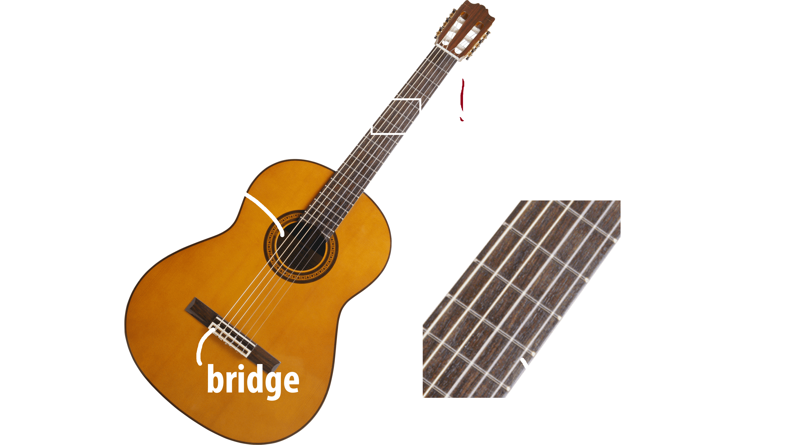

Parts of a Guitar
This is what a standard guitar looks like. It usually has only six strings you need to worry about, but some guitars have 12 strings! Here's an explanation to each part of the guitar mentioned in the picture above.
Neck
This is the long part of the guitar that sticks out of the main body. This is where you position one of your hands. Almost all the magic of the guitar originates from here, from making chords to creating beautiful solos.
Frets
Frets are the metal strips that go horizontally down the neck. In terms of playing guitar, the spaces between the frets are usually referred to as the frets. There are usually around twenty of these frets on a standard guitar.
Strings
The strings are arguably the most important part of the guitar. These thin little rods make the sounds of the guitar. Notice how each string is a different thickness. Each string sounds different when you pluck it because each string is tuned to a different note.
Tuning Pegs
Tuning pegs are responsible for tuning the guitar strings. From time to time, your guitar will sound "out of tune" and you will have to re-tune the guitar using these 6 knobs. Just follow the string and you'll find which string corresponds to which knob.
Sound Hole
This is where all your guitar picks accidentally fall into. In all seriousness, the hole is there to project the guitars sound outward.
Bridge
The bridge on a guitar is the bit that supports the strings as they travel over the guitar body. It functions as the component that transfers the vibrations of the strings into the body, which, in the case of an acoustic guitar, amplifies them.
Go back to top